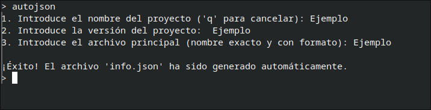

Cuando activas el modo desarrollador con devmode desbloqueas varios
comandos aptos para el desarrollo de aplicaciones y otras cosas. Estos son todos:
-d = Sirve como una ventana de ayuda para mostrarte que hacen todosautojson = Este comando es demasiado útil para la creación de aplicaciones:autojson te permite autogenerar esos archivos, su interfaz se ve
así:
